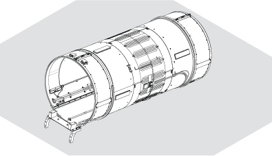
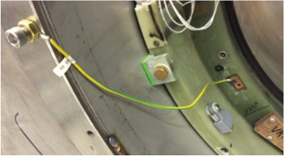
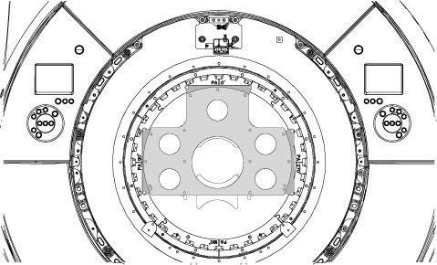
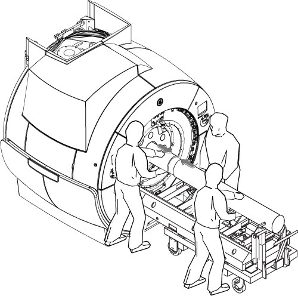
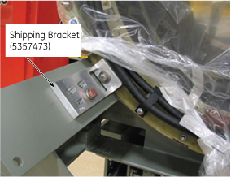
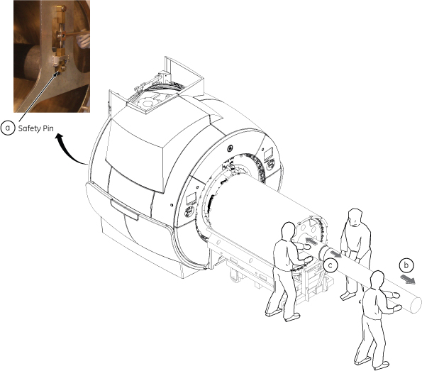
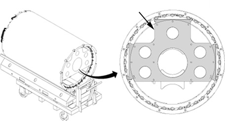
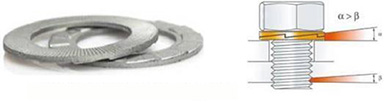
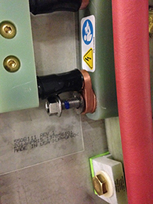

- 00000018WIA30AFC230GYZ
- id_156676231.90
- Aug 29, 2025 8:30:30 AM
Replacing the VRMw coil
Prerequisites
| Personnel requirements | |||
|---|---|---|---|
| Required persons | Preliminary requirements | Procedure | Finalization |
| 3 | - | 3 days | - |
| Tools and test equipment | |||
|---|---|---|---|
| Item | Quantity | Part number | Manufacturer |
| Nonmagnetic Hand Air Pump | 1 | - | - |
| Extension Cord | 1 | - | - |
| Vacuum Cleaner | 1 | - | - |
| Set: Nonabsorbent Protective Clothing (long sleeve shirt and pants) | 1 for each person | - | - |
| Pair: Nonferrous Safety Shoes | 1 for each person | - | - |
| Safety Glasses | 1 for each person | - | - |
| Pair: Cut-Resistant Gloves | 1 for each person | - | - |
| Gradient Coil Cart | 1 | 2134810 | - |
| Gradient Coil Insertion and Lift Kit | 1 | 2164744-8 | - |
| Passive Shim Tray Extraction Tool | 1 | 5325761 | - |
| Universal Field Mapping Fixture Kit | 1 | 5266042-4 | - |
| Shim Camera Kit | 1 | 2386028-3 | - |
| Nonmagnetic Titanium Service Tool Kit, Large Set | 1 | 5112581 | - |
| Torque Wrench, 8 to 50 N m Adjustable, Nonmagnetic | 1 |
5534134 or 5534134-2 | - |
| B0 Power Supply Kit | 1 | 2141701 | - |
| 5 Gallon Pail | 1 | 2239133 | - |
| Dispenser of 100 #6005 Large N-DEX Nitrile Disposable Gloves Best #6005L | 1 | 46-194427P400 | - |
| Authorized Personnel Floor Sign (included with Safety Signage Kit 46-258770G4) | 1 | 2289812 | - |
| Consumables | |||
|---|---|---|---|
| Item | Quantity | Part number | Manufacturer |
| Isopropyl Alcohol, 70%, USFS-200 | 1 | - | - |
| Scour Pad (or equivalent) | As Required | - | Scotch-Brite™ |
| Cable Tie, 190 Wide X 14 large, nylon | 100 | 46-252283P68 | - |
| LOCTITE #243 (50 ml) (check expiration date) | 1 | 5415261-3 | - |
| Loctite #271 (check expiration date) | 1 | 46-170684P2 | - |
| Never-Seez Regular Grade Lubricating and Anti-Seize Compound | As Required | 46-294151P8 | Bostik |
| Clean Lint-Free Towels (Kimwipes™) | As Required | - | - |
| Coolant (Four 1-Gallon Bottles) (Note: Coolant will be reused. According to the remaining coolant in GCU, order it.) | As Required | 5174313-4 or 5174313-14 | - |
| Required conditions |
|---|
| Order the non-magnetic torque wrench before starting this procedure. |
| If the magnet is ramped, remove all passive shim trays from the VRMw coil prior to the installation and store them in a safe place. See "Ref" column for applicable documentation containing procedures for removing the passive shim trays. The procedure for replacing shim trays can be found in the appropriate Magnet and Cryogen Manual:
|
| Safety | ||||
|---|---|---|---|---|
|
Before working in any GE HealthCare MR suite or doing any GE HealthCare service procedure, you must:
If you have any safety concerns at any time, do not begin work or immediately stop work and move to a safe location. Immediately contact your supervisor or site safety officer for instructions on how to proceed. | ||||
| ||||
| ||||
| ||||
| ||||
| ||||
| ||||
About this task
Coolant will be reused after replacement. In case disposal of coolant is required, inform the customer that coolant disposal is needed and then follow the proper customer coolant disposal procedure.
Process flow of VRMw coil replacement
About this task
| Day 1 (12:30) | ||
|---|---|---|
| Process | Hours:Minutes | Required persons |
| Power to ISC is turned off and LOTO procedures are implemented. See Applying LOTO - Integrated System Cabinet (ISC). | 0:10 | 1 |
| Move the patient table. Note No need to remove table dock frame. See Move Patient Table . (See “4.1 Move Patient Table Outside”.) | 0:20 | 1 |
| Remove the front endbell. See Front Endbell Removal. | 0:30 | 2 |
| Remove the rear endbell. See Rear Endbell Removal. | 0:15 | 1 |
| Remove the body coil. See RF Body Coil Replacement. (See step 5 to step 14 of "4 procedure”.) Note Do not remove the front body coil mount since it is used when placing the body coil on the floor as illustration below.  | 1:30 | 3 |
| STET Setting | 1:30 | 2 |
| Remove all passive shim trays from the VRMw coil prior to the installation and store them in a safe place. Refer to the appropriate Magnet and Cryogen Manual:
Passive shim trays are highly ferrous. Heed all warnings in Safety section above. | 1:30 | 2 |
| Remove STET | 0:30 | 3 |
| VRMw gradient coil replacement (Remove) From Coolant water removal to Moving VRMw gradient coil with cart. | 3:30 | 3 |
| VRMw gradient coil replacement (Install) From Preparation before installing VRMw gradient coil to VRMw gradient coil installation. | 2:30 | 3 |
| Day 2 (11:00) | ||
|---|---|---|
| Process | Hours:Minutes | Required persons |
Refer to the appropriate Magnet and Cryogen Manual:
WARNING: Passive shim trays are highly ferrous. Heed all warnings in Safety section above. | 5:00 | 2 |
| 2:30 | 3 |
|
Add coolant to GCU.
| 0:30 | 1 |
| 1:00 | 2 |
| 0:15 | 1 |
| Day 3 (14:20) | ||
|---|---|---|
| Process | Hours:Minutes | Required persons |
| Do Body coil tuning. | 1:00 | 1 |
| Do Doing the EPI White Pixel test (Full mode). | 0:30 | 1 |
| Do SPT Coherent Noise Check. | 1:00 | 1 |
| Do Auto DQA Calibration. See Doing DQA calibration with the DQA III phantom. | 0:30 | 1 |
| Do DC Offset Adjustment. | 0:15 | 1 |
| Do Grafidy 3 Eddy Current Calibration. | 1:00 | 1 |
| Do Auto DQA Calibration (final). See Doing DQA calibration with the DQA III phantom. | 0:30 | 1 |
| Do High Order Eddy Current (HOEC) Calibration. | 0:15 | 1 |
| Do Dual drive quadrature tool. | 1:00 | 1 |
| Do LV Shim (Grad Shim). | 0:30 | 1 |
| Wait for 2 hours before starting B0 drift functional check. | 2:00 | 0 |
| Do B0 Drift Functional Check. | 1:00 | 1 |
| Do System Gain Calibration (Body). | 0:30 | 1 |
Do the following tests.
| 1:30 | 1 |
| Do MCQA for PA Coil Upper and MCQA for PA Coil Lower. | 0:40 | 1 |
| Do a SaveINFO to capture new calibration values. | 0:25 | 1 |
Coolant water removal
Procedure
Make sure power to the ISC cabinet is turned off and LOTO procedures are implemented. Applying LOTO - Integrated System Cabinet (ISC)DANGER 
Disconnect the supply and return hose for the gradient coil from the manifold valve assembly.Notice 
Cable removal and busbar disconnection
Procedure
Cable removal
About this task

VRMw gradient coil removal
Procedure
Align the mounting holes of the patient end mounting plate (5161985), including guide roller assembly, with adapter plates (5338222), which are already attached to the gradient coil. Secure installation plate to the adapter plates using M10 x 20 mm bolts and M10 nuts.Notice Figure 15. Mounting plate with roller assemblies - patient end 
- Attach the Wing Adapters (5339882, Item 2) to the tube support plate with stainless steel 0.75 inch 16 x 1.25 inch long bolts.
Figure 19. Support plate with wing adapters 
Moving VRMw gradient coil with cart
Procedure
Warning 
Put the tube jack assembly (5191132) in the cart. Make sure the back of the jack assembly fits properly into the cart.Notice Figure 22. Jack assembly placement 
- Maneuver the cart to the patient end of the magnet, and position it in front of the magnet with at least a 50.8 mm (2 inch) gap between the cart and the magnet interface ring (required for lower wedge removal.)
Figure 23. 2-inch gap between the magnet and cart 
- Retrieve the male Insertion Tube (2284929) and Tube Standoff (5191626).
- Attach the tube standoff to the male insertion tube using the 4 inch, 0.375-16 UNC hex socket screw (5303993) included in the gradient coil insertion and lift kit.
- After the standoff is secured to the tube, attach the tube pilot shaft to the standoff.
Figure 24. Attaching the standoff to the insertion tube 
With one person holding the male insertion tube to keep it from rolling, two people should obtain the female insertion tube from the shipping crate and thread the two tubes together.Notice Note Each of the two pieces of the gradient insertion tool weighs less than 35lb (15.9kg).Figure 27. Setting up insertion tube assembly 
Recheck the centering of the cart left-to-right with respect to the magnet bore, and adjust the longitudinal alignment of the cart if required.Notice
Properly secure gradient coil to coil cart with Shipping Brackets (5357473).CAUTION Figure 29. Shipping brackets (example at one location) 
Remove the insertion tool from the gradient coil per following steps.CAUTION - Remove safety pin from the support plate.
- Slide out the insertion tool until the joint can be seen.
- With one person holding the male insertion tube to keep it from rolling, two people remove the female tube from the male tube.
- Remove the male insertion tube with two people.
Note Each of the two pieces of the gradient insertion tool weighs less than 35lb (15.9kg).Figure 30. Removal of tool 
Preparation before installing VRMw gradient coil
Procedure
- Remove the gradient coil cradle fasteners, two per side, from the cradle.
Figure 36. Removing cradle fasteners 
Align the mounting holes of the patient end mounting plate (5161985), including guide roller assembly, with adapter plates (5338222), which are already attached to the gradient coil. Secure installation plate to the adapter plates using M10 x 20 mm bolts and M10 nuts.Notice Figure 38. Mounting plate with roller assemblies - patient end 
- Obtain the male insertion tube (2284929) and tube standoff (5191626).
- Attach the tube standoff to the male insertion tube using the 4 inch, 0.375-16UNC hex socket screw (5303993) included in the Gradient Coil insertion and lift kit.
- After the standoff is secured to the tube, attach the tube pilot shaft to the standoff.
Figure 40. Attaching the standoff to the insertion tube
VRMw gradient coil installation
Procedure
- Adjust the tube support plate assembly's horizontal adjustment screws until the tube support bearing is centered left-to-right.
Figure 43. Adjusting the support plate 
1 Spacer 2 Vertical Adjustment Lever 3 Horizontal Adjustment Screw 4 Support Bearing
Place the tube jack assembly (5191132) in the cart. Make sure the back of the jack assembly fits properly into the cart.Warning Figure 44. Jack assembly placement - Maneuver the cart and gradient coil to the patient end of the magnet, and position it in front of the magnet with at least a 2 inch (50.8 mm) gap between the cart and the magnet interface ring (required for lower wedge removal)
Figure 45. 2-inch gap between the cart and magnet
With one person holding the male insertion tube to keep it from rolling, two people should obtain the female insertion tube from the shipping crate and thread the two tubes together.Notice Figure 47. Setting up the insertion tube assembly 
Push the complete insertion tube assembly into the magnet bore. Get the tube pilot shaft as close to (but not touching) the tube support plate as possible.Notice Figure 48. Complete the insertion tube assembly 
- Re-install the Axial Stop Assembly for patient at the patient end of the magnet. Make sure that the gradient coil is making contact with the patient end axial stops. Slowly lower the gradient coil onto the pads. Release pressure on the beam, so that the coil is supported by the mounting pads.
Figure 56. Lowering the gradient coil with the radial alignment tool 
Notice Note Observe the following:Re-install busbar cables to new gradient coil. Place a new Nord-Lock washer over each stud.- Always use the new Nord-Lock washers that come with the FRU package. DO NOT reuse the old Nord-Lock washers.
- Nord-Lock washers consist of two pieces, which are generally glued together. Always use a complete set with two pieces joined together in correct orientation. DO NOT use a separated single piece.
Figure 59. Nord-Lock washers 
- After putting the cable connection on the stud, place a new Nord-Lock washer over each stud.
- Put two drops of Loctite 243 on the exposed thread. (Shake the bottle first.)Note Do not get Loctite on the Nord-Lock washer.
Figure 60. Loctite on the stud 
- Hand-tighten the nut.
- Discard the old washers.
- Installation Sequence:
- Power cable lug
- Nord-Lock washer
- Brass nut
Figure 61. Installation of the busbar cables to the new gradient coil
DANGER Notice Notice
Set the torque wrench to 25 ft-lbs or 33.9 Nm. Install 15 mm socket on the extension.Notice  Note Make sure that the arrow on the torque wrench is visible. If the arrow is not visible, the torque wrench will not “click” when the proper torque is reached.
Note Make sure that the arrow on the torque wrench is visible. If the arrow is not visible, the torque wrench will not “click” when the proper torque is reached.Figure 62. Arrow on Non-magnetic torque wrench 
- Using a Sharpie pen, place a line from the base of the stud to the nut.
Figure 63. Stud and the nut marked to show torque position 
1 Black line on the nut and stud to show torque position.